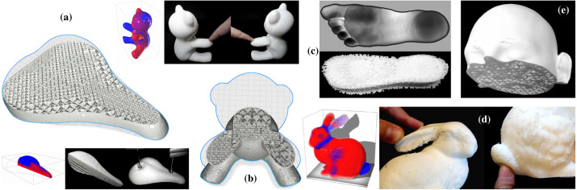

CrossFill: Foam Structures with Graded Density for Continuous Material Extrusion
Computer Aided Design, 2019
Special issue of Solid and Physical Modeling (SPM) 2019
| Tim Kuipers, Jun Wu, and Charlie Wang |
| Ultimaker |
| Department of Design Engineering, TU Delft |
| Department of Mechanical and Automation Engineering, The Chinese University of Hong Kong |

Various examples of applications of CrossFill. (a) A bicycle saddle with a density specification. A weight of 33 N is added on various locations to show the different response of different density infill. (b) A teddy bear with a density specification. (c) A shoe sole with densities based on a pressure map of a foot. (d) The Stanford bunny painted with a density specification. (e) A medical phantom with an example density distribution for calibrating an MRI scanning procedure.
Abstract
The fabrication flexibility of 3D printing has sparked a lot of interest in designing structures with spatially graded material properties. In this paper, we propose a new type of density graded structure that is particularly designed for 3D printing systems based on filament extrusion. In order to ensure high-quality fabrication results, extrusion-based 3D printing requires not only that the structures are self-supporting, but also that extrusion toolpaths are continuous and free of self-overlap. The structure proposed in this paper, called CrossFill, complies with these requirements. In particular, CrossFill is a self-supporting foam structure, for which each layer is fabricated by a single, continuous and overlap-free path of material extrusion. Our method for generating CrossFill is based on a space-filling surface that employs spatially varying subdivision levels. Dithering of the subdivision levels is performed to accurately reproduce a prescribed density distribution. We demonstrate the effectiveness of CrossFill on a number of experimental tests and applications.Download
 |
Paper MB |
Video
Cura implementation
Bibtex
@article{Kuipers2019CAD,
title = "CrossFill: Foam Structures with Graded Density for Continuous Material Extrusion",
journal = "Computer-Aided Design",
volume = "114",
pages = "37 - 50",
year = "2019",
issn = "0010-4485",
doi = "https://doi.org/10.1016/j.cad.2019.05.003",
author = "Tim Kuipers and Jun Wu and Charlie C.L. Wang",
keywords = "Space-filling surface, Graded density, Continuous material extrusion, Functionally graded material, Fused deposition modeling",
}